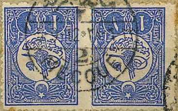
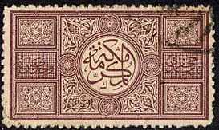
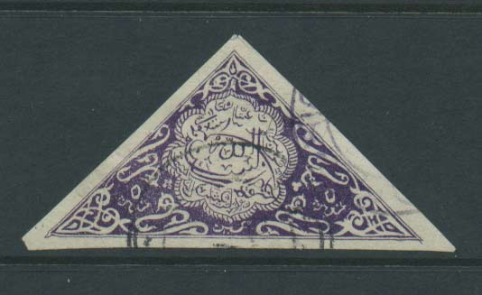
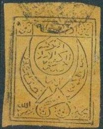

Note: on my website many of the
pictures can not be seen! They are of course present in the
catalogue;
contact me if you want to purchase the catalogue.
Before 1916 stamps of Turkey were used in Saudi Arabia. Example of two stamps used in Mecca:



1 pa brown 1/8 Pi orange (= 5 pa) 1/4 Pi green 1/2 Pi red 1 Pi blue 2 Pi red (1917)
These stamps are either perforated normally, rouletted or perforated 'zig-zag'.
Value of the stamps |
|||
vc = very common c = common * = not so common ** = uncommon |
*** = very uncommon R = rare RR = very rare RRR = extremely rare |
||
| Value | Unused | Used | Remarks |
| 1 pa | * | * | |
| 1/8 Pi | * | * | |
| 1/4 Pi | * | * | |
| 1/2 Pi | ** | * | |
| 1 Pi | ** | ** | |
| 2 Pi | *** | *** | |
Overprinted with arabic text (1922):
1 pa brown 1/8 Pi orange (= 5 pa) 1/4 Pi green 1/2 Pi red 1 Pi blue 2 Pi red
Value of the stamps |
|||
vc = very common c = common * = not so common ** = uncommon |
*** = very uncommon R = rare RR = very rare RRR = extremely rare |
||
| Value | Unused | Used | Remarks |
| 1 pa | RR | RR | |
| 1/8 Pi | RR | RR | |
| 1/4 Pi | *** | *** | |
| 1/2 Pi | *** | *** | |
| 1 Pi | *** | *** | |
| 2 Pi | R | R | |
Overprinted with arabic text and further surcharged
1/2 Pi on 1 pa brown 1 Pi on 1 pa brown
Value of the stamps |
|||
vc = very common c = common * = not so common ** = uncommon |
*** = very uncommon R = rare RR = very rare RRR = extremely rare |
||
| Value | Unused | Used | Remarks |
| 1/2 Pi on 1 pa | RRR | RRR | |
| 1 Pi on 1 pa | RRR | RRR | |
Two arabic overprints; one in black and one in blue.
1934 issue, inscription 'ROYAUME DE L'ARABIE SOUDITE'
Examples:

This stamp exists in green, red, blue, orange and violet. These bogus stamps seems to have been made in Warsaw (Poland), however other sources say Italy ( http://mysite.freeserve.com/saudi/forgtri.htm ). The mentionned website also shows much more information about these bogus stamps (even perforated stamps seem to exist). They appeared on the market around 1923.
In 1926 Yemen issued its first stamps, example:

Forgeries of these stamps exists, see: https://stampforgeries.com/forged-stamps-of-yemen/